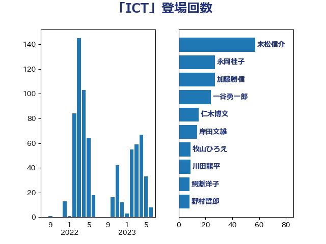

単語「ICT」

| 末松信介 | 自由民主党 | 57 回 |
| 永岡桂子 | 自由民主党 | 27 回 |
| 加藤勝信 | 自由民主党 | 27 回 |
| 一谷勇一郎 | 日本維新の会 | 24 回 |
| 仁木博文 | 無所属 | 15 回 |
| 岸田文雄 | 自由民主党 | 14 回 |
| 牧山ひろえ | 立憲民主党 | 9 回 |
| 川田龍平 | 立憲民主党 | 9 回 |
| 鰐淵洋子 | 公明党 | 8 回 |
| 野村哲郎 | 自由民主党 | 8 回 |
| 本田顕子 | 自由民主党 | 7 回 |
| 後藤茂之 | 自由民主党 | 7 回 |
| 堀場幸子 | 日本維新の会 | 7 回 |
| 佐々木さやか | 公明党 | 7 回 |
| 野田聖子 | 自由民主党 | 6 回 |
| 萩生田光一 | 自由民主党 | 6 回 |
| 杉久武 | 公明党 | 6 回 |
| 赤木正幸 | 日本維新の会 | 5 回 |
| 舩後靖彦 | れいわ新選組 | 5 回 |
| 竹内真二 | 公明党 | 5 回 |
| 櫻井周 | 立憲民主党 | 5 回 |
| 斉藤鉄夫 | 公明党 | 5 回 |
| 高見康裕 | 自由民主党 | 4 回 |
| 長友慎治 | 国民民主党 | 4 回 |
| 遠藤良太 | 日本維新の会 | 4 回 |
| 西岡秀子 | 国民民主党 | 4 回 |
| 簗和生 | 自由民主党 | 4 回 |
| 宮本岳志 | 日本共産党 | 4 回 |
| 中川宏昌 | 公明党 | 4 回 |
| 鈴木俊一 | 自由民主党 | 3 回 |
| 輿水恵一 | 公明党 | 3 回 |
| 西銘恒三郎 | 自由民主党 | 3 回 |
| 羽田次郎 | 立憲民主党 | 3 回 |
| 石井苗子 | 日本維新の会 | 3 回 |
| 漆間譲司 | 日本維新の会 | 3 回 |
| 木原稔 | 自由民主党 | 3 回 |
| 山崎正恭 | 公明党 | 3 回 |
| 小倉將信 | 自由民主党 | 3 回 |
| 伊佐進一 | 公明党 | 3 回 |
| 馬場伸幸 | 日本維新の会 | 2 回 |
| 金子恭之 | 自由民主党 | 2 回 |
| 若宮健嗣 | 自由民主党 | 2 回 |
| 秋野公造 | 公明党 | 2 回 |
| 田村まみ | 国民民主党 | 2 回 |
| 田中健 | 国民民主党 | 2 回 |
| 浮島智子 | 公明党 | 2 回 |
| 津島淳 | 自由民主党 | 2 回 |
| 河西宏一 | 公明党 | 2 回 |
| 武部新 | 自由民主党 | 2 回 |
| 森山浩行 | 立憲民主党 | 2 回 |
| 東徹 | 日本維新の会 | 2 回 |
| 日下正喜 | 公明党 | 2 回 |
| 斎藤嘉隆 | 立憲民主党 | 2 回 |
| 掘井健智 | 日本維新の会 | 2 回 |
| 山本博司 | 公明党 | 2 回 |
| 小林茂樹 | 自由民主党 | 2 回 |
| 宮本周司 | 自由民主党 | 2 回 |
| 堤かなめ | 立憲民主党 | 2 回 |
| 吉良よし子 | 日本共産党 | 2 回 |
| 古屋範子 | 公明党 | 2 回 |
| 勝部賢志 | 立憲民主党 | 2 回 |
| 伊藤孝江 | 公明党 | 2 回 |
| 井林辰憲 | 自由民主党 | 2 回 |
| 中西祐介 | 自由民主党 | 2 回 |
| 上野通子 | 自由民主党 | 2 回 |
| 三反園訓 | 無所属 | 2 回 |
| 齋藤健 | 自由民主党 | 1 回 |
| 鳩山二郎 | 自由民主党 | 1 回 |
| 高橋千鶴子 | 日本共産党 | 1 回 |
| 高橋光男 | 公明党 | 1 回 |
| 階猛 | 立憲民主党 | 1 回 |
| 阿部司 | 日本維新の会 | 1 回 |
| 金子道仁 | 日本維新の会 | 1 回 |
| 野田国義 | 立憲民主党 | 1 回 |
| 酒井庸行 | 自由民主党 | 1 回 |
| 進藤金日子 | 自由民主党 | 1 回 |
| 藤巻健太 | 日本維新の会 | 1 回 |
| 緑川貴士 | 立憲民主党 | 1 回 |
| 米山隆一 | 立憲民主党 | 1 回 |
| 竹詰仁 | 国民民主党 | 1 回 |
| 稲富修二 | 立憲民主党 | 1 回 |
| 石川香織 | 立憲民主党 | 1 回 |
| 石川博崇 | 公明党 | 1 回 |
| 石原宏高 | 自由民主党 | 1 回 |
| 田畑裕明 | 自由民主党 | 1 回 |
| 田所嘉徳 | 自由民主党 | 1 回 |
| 玉木雄一郎 | 国民民主党 | 1 回 |
| 片山大介 | 日本維新の会 | 1 回 |
| 熊谷裕人 | 立憲民主党 | 1 回 |
| 渡辺孝一 | 自由民主党 | 1 回 |
| 清水真人 | 自由民主党 | 1 回 |
| 浅田均 | 日本維新の会 | 1 回 |
| 池畑浩太朗 | 日本維新の会 | 1 回 |
| 池下卓 | 日本維新の会 | 1 回 |
| 水岡俊一 | 立憲民主党 | 1 回 |
| 横沢高徳 | 立憲民主党 | 1 回 |
| 榛葉賀津也 | 国民民主党 | 1 回 |
| 森田俊和 | 立憲民主党 | 1 回 |
| 柴山昌彦 | 自由民主党 | 1 回 |
| 柘植芳文 | 自由民主党 | 1 回 |
| 松本剛明 | 自由民主党 | 1 回 |
| 松下新平 | 自由民主党 | 1 回 |
| 東国幹 | 自由民主党 | 1 回 |
| 新藤義孝 | 自由民主党 | 1 回 |
| 新垣邦男 | 立憲民主党 | 1 回 |
| 斎藤洋明 | 自由民主党 | 1 回 |
| 徳永エリ | 立憲民主党 | 1 回 |
| 岩本剛人 | 自由民主党 | 1 回 |
| 岡田直樹 | 自由民主党 | 1 回 |
| 山田太郎 | 自由民主党 | 1 回 |
| 山田勝彦 | 立憲民主党 | 1 回 |
| 山本左近 | 自由民主党 | 1 回 |
| 山口晋 | 自由民主党 | 1 回 |
| 山口壯 | 自由民主党 | 1 回 |
| 小野泰輔 | 日本維新の会 | 1 回 |
| 小西洋之 | 立憲民主党 | 1 回 |
| 国光あやの | 自由民主党 | 1 回 |
| 吉田久美子 | 公明党 | 1 回 |
| 古川禎久 | 自由民主党 | 1 回 |
| 友納理緒 | 自由民主党 | 1 回 |
| 勝目康 | 自由民主党 | 1 回 |
| 佐藤英道 | 公明党 | 1 回 |
| 住吉寛紀 | 日本維新の会 | 1 回 |
| 伊東信久 | 日本維新の会 | 1 回 |
| 今井絵理子 | 自由民主党 | 1 回 |
| 五十嵐清 | 自由民主党 | 1 回 |
| 中村裕之 | 自由民主党 | 1 回 |
| 中山展宏 | 自由民主党 | 1 回 |
| 下野六太 | 公明党 | 1 回 |
| 三谷英弘 | 自由民主党 | 1 回 |